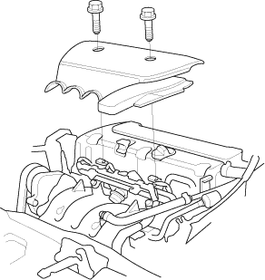
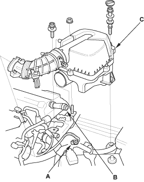
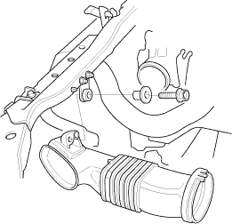

Special Tools Required
Engine tilt hanger set, 07KAK-SJ40101
NOTE:
- Use fender covers to avoid damaging painted surfaces.
- To avoid damage, unplug the wiring connectors carefully while holding the connector portion.
- Mark all wiring and hoses to avoid misconnection. Also, be sure that they do not contact other wiring or hoses, or interfere with other parts.
- Secure the hood in the wide open position (support rod in the lower hole).
- Make sure you have the anti-theft code for the radio, then write down the frequencies for the radio's preset buttons.
- Disconnect the battery negative terminal first, then the positive terminal.
- Remove the battery.
- Remove the intake manifold cover.


- Disconnect the Intake Air Temperature (IAT) sensor connector (A) and remove the breather hose (B), then remove the air cleaner housing (C).

- Remove the intake air duct.
